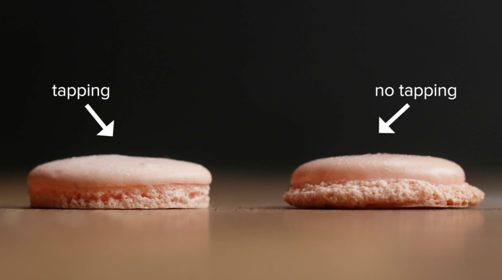
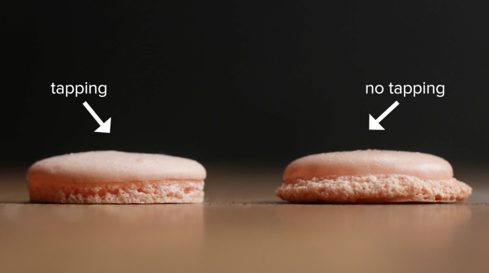

French Macarons are round, delicate, often brightly colored sandwich cookies. They are typically filled with a ganache, buttercream, or jam. The meringue cookies have a wonderfully chewy interior texture and a crisp shell. Well made macaron cookies should be perfectly round with a ruffled "skirt" along the edge where it has risen in the oven.
 

I thought Epicurious' landing page was lacking. But the interface after a search was made was much better. It had the most search filter options available. I liked that recipes had quick views, however, ocassionally I was inundated with articles when all I wanted was recipes. Recipes also began with brief descriptions. In my opinion ingredients need to be immediately visible.
I thought Bon Appetit had a more enticing landing page, I like the use of large scale graphics. The search results were on-par with Epicurious, and allowed you to filter by dietary concerns. I appreciated that recipes all began with ingredients, active time and yeild, rather than making the audience scroll through an article about the recipe. I liked that recipes had quick views, and that results could be filtered with lots of
All Recipes likely had the worst landing page. Although I liked that you can immediately search by ingredient unlike the other two sites which require you making an initial search to apply filters. The recipe pages were well designed, with a photo gallery and active time immediately visible. Recipe amounts can be adjusted on-site to match desired yield.
I love how this webpage implements a horizontal scroll. I think it really enhances the material. Combined with the liberal use of whitespace I think this site has great communication techniques.
I found this site incredibly fascinating. I loved the use of a bold background color with white text. The combination of limited, small-scale images with lots of creative uses of text enhances the content of this page.
I loved Vitera's landing page. I like that the audience immediately sees a full-scall image of the product being sold. Immediately beneath the image you are met with six uniquely designed icons depicting emotions. The site will provide you with a tea recommendation based on how you are feeling.